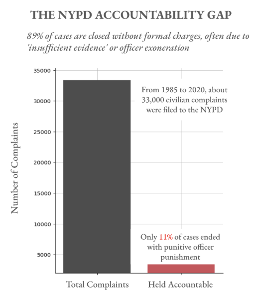
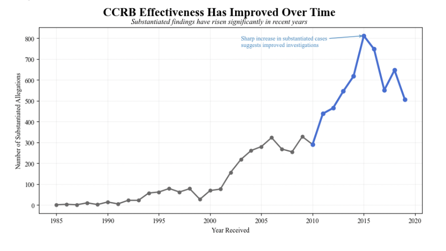

Positive
Subtitle: Total number of CCRB complaints plotted against number of complaints that ended with officer punishment
Proposition: The CCRB investigation process is ineffective, as the vast majority of civilian complaints result in no disciplinary action for officers

Rationale
- Score: -1.0. For my “Held Accountable” bar, I filtered the dataset to find the complaints that ended with the officer actually being charged (called “Substantiated (Charges)”) and excluded the rows that ended with Substantiation but a smaller punishment (like “Formal Training” or “Command Discipline”). Essentially, I only defined “Accountability” as formal legal charges to exaggerate the statistics. While technically accurate to the data, it is deceptive because it intentionally shrinks the “success” bar to its smallest possible form to support the “ineffective” narrative.
- Score: -2.0. I set the y-axis minimum to 2000 instead of 0. This decision is highly deceptive as it visually "chops off" the bottom of the bars, making the substantiated charges bar look like a tiny fraction of its actual value relative to the total. I considered using a logarithmic scale, but decided otherwise because using raw numbers may lull readers into a false sense of security.
- Score: -0.5. I assigned a muted, dark charcoal gray to the total complaints and a vibrant, "emergency" red to the substantiated bar in order to make it stand out. I considered using blue for the total, but gray felt more neutral and less likely to trigger a "police-positive" association.
---
Negative
Proposition: The CCRB investigation process is effective, as substantiated findings have increased substantially over time, indicating improved investigative outcomes

Rationale
- Score: -0.5. I grouped the data by year_received and included all cases where board_disposition contains “Substantiated.” This includes both formal charges and smaller disciplinary actions like training or command discipline. This broad definition increases the number of “successful” cases and makes the upward trend look stronger.
- Score: -1.0. I calculated and included a +718% increase from 1995 to 2020 in the subtitle. This helps make the trend feel more dramatic and easier to understand. However, choosing 1995 avoids earlier years with very small values, which could have made the percentage even larger but less stable.
- Score: -0.5. I used a line chart to show changes over time and highlighted years after 2010 in blue while keeping earlier years gray. This draws attention to the recent increase and makes the improvement stand out more clearly.
- Score: -1.0. I added an annotation near the peak that says “Sharp increase in substantiated cases suggests improved investigations.” This directly tells the viewer how to interpret the trend.
- Score: 0.5. I kept the axes clear and the scale consistent to make the visualization easy to read and appear trustworthy.
---
Final Reflection
What I found most interesting about this project was how easy it was to tell two completely different stories using the exact same dataset. On one side, the data clearly shows that only a small percentage of complaints lead to formal charges, which makes the system look ineffective. But on the other side, by slightly changing how I defined “accountability” and focusing on trends over time, I was able to make it seem like the system is improving.
The hardest part was figuring out where the line is between being persuasive and being misleading. For example, filtering only for “Substantiated (Charges)” is technically correct, but it ignores other outcomes that could still count as accountability. Similarly, highlighting a large percentage increase over time sounds impressive, but it depends heavily on which years are chosen.
This project showed me that ethical visualization is not just about showing correct data, but also about being transparent. Small choices like color, scaling, filtering, and wording can completely change how someone interprets a chart. I now think a visualization becomes misleading when it hides important context or relies on the viewer not noticing key design decisions. Overall, I lean toward the idea that the system is ineffective because the overall percentage of serious accountability is still low.